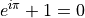
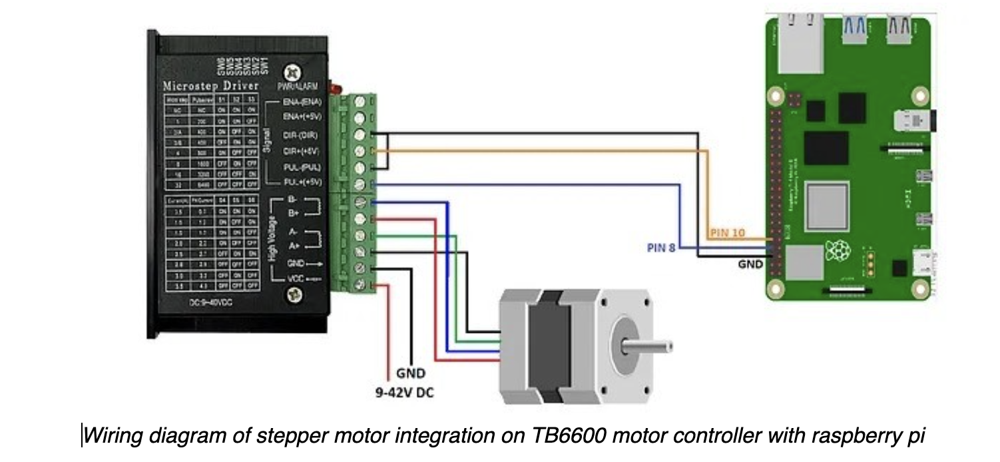

Test Page - not for publication
Read time: 0 minutes (155 words)
(1)
Euler’s identity, equation (1), was elected one of the most beautiful mathematical formulas.
An Example TikZ Directive with Caption
See [Bla22] for more information.
Here is a basic control setup:
